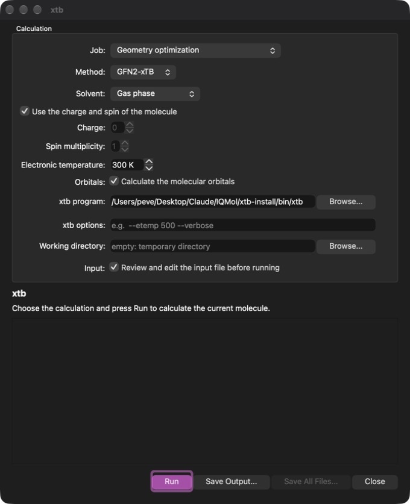
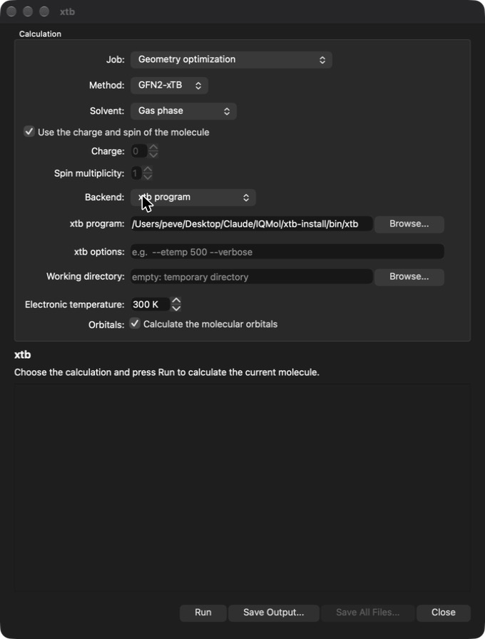
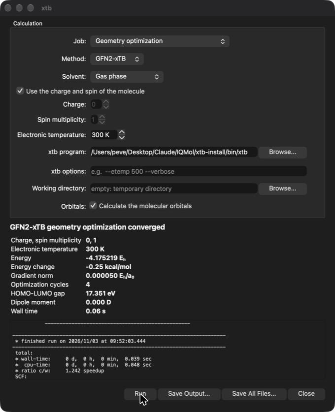
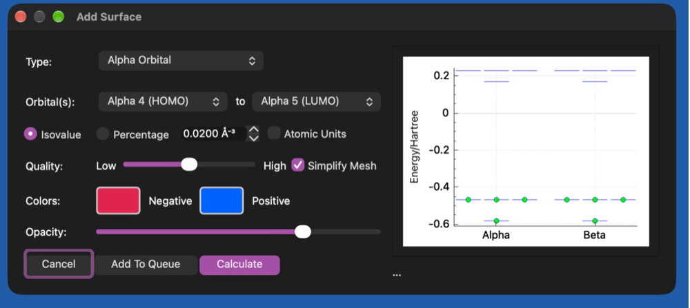
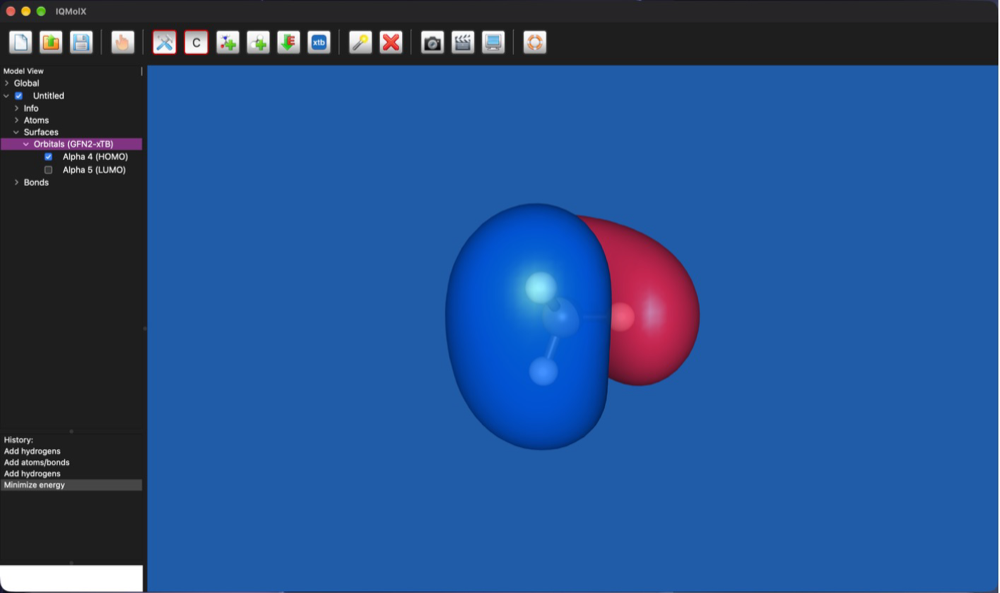
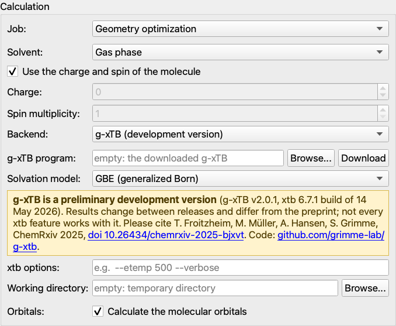

Minimize Structure and
for the energy shown while building. It always runs in the gas phase and does
not support constraints or frozen atoms, which are ignored with a warning.
Minimize Structure and
for the energy shown while building. It always runs in the gas phase and does
not support constraints or frozen atoms, which are ignored with a warning.
IQMolX can run the semiempirical tight-binding methods GFN2-xTB and GFN1-xTB of the xtb package (Grimme group) directly on the molecule in the Viewer. The calculations are fast enough to be run interactively and can optimize the geometry, calculate energies, vibrational frequencies and molecular orbitals, with or without an implicit solvent. The results are added to the molecule and can be examined with the usual IQMolX tools. The force field GFN-FF is also available for building and minimizing structures. A development version of the newer method g-xTB can be added as a backend of its own.
All settings are collected in the xtb window, which is opened with the button on the Tool Bar or with the menu option Calculation→xtb Setup (Ctrl+Shift+X).

The window as it opens: a geometry optimization with GFN2-xTB in the gas
phase, using the built-in library.
The Backend menu of the window says what carries out the calculation. There are three:
What each of them offers:
| Built-in library | xtb program | g-xTB (development) | |
| Method | GFN2-xTB, GFN1-xTB | GFN2-xTB, GFN1-xTB | g-xTB only |
| Solvents | ALPB | ALPB | GBE or COSMO |
| Geometry optimizer | IQMolX's own | that of xtb | that of xtb |
| Electronic temperature | fixed, 300 K | can be set | not available |
| Molecular orbitals | no | yes | yes |
| Extra options, working directory | no | yes | yes |
| Comes from | inside IQMolX | inside the macOS app, or installed by you | Download button (about 41 MB) |
| Status | released | released | preliminary, changes between releases |
The library and the program give the same energies and frequencies (the
frequencies differ by about 0.05%). The library is the simplest to use; the program is
the more flexible of the two, as it offers the options described under
xtb Program. The library does not provide the basis set of
the orbitals or read the electronic temperature, so these need the xtb program (or
g-xTB, which is a program too); choosing one of them adds their settings to the
window. g-xTB is a different method, so its energies cannot be compared with
those of GFN2-xTB or GFN1-xTB.
Each session starts with the same defaults: a geometry optimization with GFN2-xTB in the gas phase, the charge and spin of the molecule, the built-in library (the xtb program if IQMolX was built without it) and, for the program, an electronic temperature of 300 K. The g-xTB backend is never the default: you choose it each time. Changes are kept until IQMolX is closed. Only the location of the xtb program, the extra options and the working directory are remembered from one session to the next.
| Job | Single point energy, Geometry optimization (the atoms are moved to the optimized structure, which can be undone from the History), Vibrational frequencies or Geometry optimization and frequencies. |
| Method | GFN2-xTB or GFN1-xTB. Not shown for the g-xTB backend, which has one method. |
| Solvent | Gas phase, or one of the implicit solvents of the ALPB model (water, methanol, acetonitrile, ...). The solvation free energy is reported with the result. With the g-xTB backend the same solvents are used with the GBE or COSMO model instead, see g-xTB. |
| Charge, spin | By default the charge and spin multiplicity of the molecule are used. Unticking the box lets you enter other values for this calculation, for example to calculate a cation or a triplet. An impossible combination is reported before xtb is started. |
| Electronic temperature | The temperature of the Fermi smearing of the orbital occupations in K (default 300 K, as in xtb). Only shown for the xtb program; the library always uses 300 K. Very low values cannot be used when the highest occupied and lowest unoccupied orbitals are (nearly) degenerate. |
| Orbitals | Also calculate the molecular orbitals, see Molecular Orbitals. Only shown for the xtb program and g-xTB. Switch this off for very large molecules. |
Pressing Run starts the calculation. The window shows the output
of xtb as it is produced and the molecule cannot be edited until the
calculation has finished or been cancelled.
When the xtb program is the backend, further settings appear at the bottom of the window: its location, extra options and a working directory (below), the electronic temperature and the option to calculate the orbitals (see above). The extra options, the working directory and the orbitals are also there for the g-xTB backend, which has its own program field with a Download button instead of the location of the xtb program.

When the calculation has finished the window shows a summary: the energy (and its change for an optimization), the norm of the gradient, the number of optimization cycles, the HOMO-LUMO gap, the dipole moment, the solvation free energy and the time taken. The energy is also shown in the Info layer of the molecule.

Save Output... writes the text of the xtb output to a file. Save
All Files... copies every file the xtb program produced (input, output,
optimized geometry, orbitals, ...) to a folder of your choice. When no
working directory has been set the files are kept until the next run or until
IQMolX is closed. A calculation can be stopped with Cancel.
The frequencies, IR intensities and normal modes are added to the
molecule as a Frequencies layer named after the method, together with the
zero point energy. They are used just like those from a Q-Chem calculation,
see Vibrational Frequencies. The frequencies
should be calculated at an optimized geometry; the window warns when the
structure is not a stationary point, so the job Geometry optimization and
frequencies is usually the right choice. The result of an earlier run is
replaced.
The orbitals of the final geometry are added to the molecule as an Orbitals layer under Surfaces, named after the method. They are plotted with the same tools as other orbitals: double click the layer to open the surface dialog, which shows the orbital energies, and select, for example, the HOMO, as described in Plotting Surfaces.


Orbital
energies, densities and Mulliken densities are available also. The orbitals
are those of the minimal valence basis of the xTB methods; the same spatial
orbitals are used for both spins. The orbitals of an earlier run are
replaced. They are only available with the xtb program and not for GFN-FF.
g-xTB is a new semiempirical method of the Grimme group, the authors of GFN2-xTB. Like GFN2-xTB it is fast enough to run on a laptop, but it is built to come much closer to the results of a good density functional calculation (ωB97M-V/def2-TZVPPD) for energies, geometries and charges, and it covers the elements up to Z = 103. It is a way to get a better answer than GFN2-xTB for the same kind of molecule, at a higher cost, before deciding whether a calculation with a real quantum chemistry program is needed.
It is a preliminary version. The repository grimme-lab/g-xtb says that it is released for testing, that its results change between releases and differ from the preprint, and that not every xtb feature works with it. For this reason IQMolX keeps it apart: it is a backend of its own, g-xTB (development version), and the normal xtb program and library are never replaced by it. Treat the numbers as provisional, do not mix energies of different g-xTB releases, and do not compare g-xTB energies with GFN2-xTB energies (they are on different scales).

The download goes to the application data folder of IQMolX (~/Library/Application Support/IQmol/g-xtb on a Mac). Download again replaces it by the release that your IQMolX was made for. To remove g-xTB, delete that folder. It is not part of the IQMolX download, because the license of its parameters is not stated in the repository.
If you already have a g-xTB build, choose its xtb program with Browse. The program that came in a browser download may be blocked by macOS the first time; run xattr -dr com.apple.quarantine on its folder once in a terminal. The plain xtb of the other backends does not have g-xTB, so it cannot be used here.
Single point energies, geometry optimizations, vibrational frequencies with IR intensities, molecular orbitals, charge and spin multiplicity, and the working directory and extra options of the xtb program all work. What is different from GFN2-xTB:
| Unable to find the g-xTB program | Nothing was downloaded yet, or the path in the field is wrong. Press Download, or choose the program with Browse. |
| The download failed | There is no internet connection, or a proxy or firewall is in the way. The message shows the answer of curl, which does the transfer. You can also download the g-xTB package yourself and choose its xtb with Browse. |
| The downloaded file is not the expected one | The SHA-256 sum is different from the one this IQMolX knows, so the file was thrown away and nothing was installed. The repository may have changed; update IQMolX, or use Browse for a build that you trust. |
| The SCF did not converge | The calculation did not reach a self-consistent result. Check the geometry (atoms too close, or a very distorted structure) and the charge and spin multiplicity. |
| Frequencies take very long | They need many gradients (see above). For a large molecule run an optimization or a single point only. Frequencies are only meaningful at a geometry that was optimized with the same method, so do not take them from another method. |
Please cite T. Froitzheim, M. Müller, A. Hansen, S. Grimme, ChemRxiv 2025,
doi 10.26434/chemrxiv-2025-bjxvt,
and mention the release of g-xTB that you used (the window shows it in the yellow note).
As a check: water with g-xTB gives frequencies of 1603, 3615 and 3672 cm-1
and a dipole of 2.25 D.
GFN-FF can be selected in Build→Select Force Field (next to MMFF94,
UFF and the others) or as the default force field in the Preferences. It is
then used by Minimize Structure and
for the energy shown while building. It always runs in the gas phase and does
not support constraints or frozen atoms, which are ignored with a warning.
Optimizing methane and plotting its HOMO (the orbitals need the xtb program, so it is selected in step 2):
The xtb program is not part of IQMolX. It can be obtained from the xtb
releases or built
with the script build-xtb-macos.sh that comes with the IQMolX source
(it needs Homebrew's cmake, gcc and openblas). Set its location in the xtb
window or in the Preferences. To build IQMolX with the built-in library, point
XTB_ROOT to the xtb installation when running
build-macos.sh.